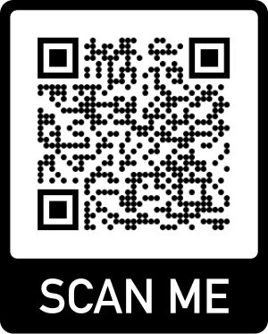

15 Giugno 2025 - Wedding day 💍
Chiara e Massimiliano si sono conosciuti nel 2020 ad una festa (si erano visti anche in precedenza ma lei lo aveva brutalmente ignorato). Subito conquistato dalla grande abilità della ragazza nel calciobalilla, Max si fa coraggio e riesce a farsi invitare a casa sua. Nonostante al suo arrivo il padre di lei tenesse in braccio un ___ (3o), Max riesce a stare ___ (7o) e a non darsela a gambe levate.
Da quel giorno i due giovani cominciano timidamente a conoscersi: lei farmacista amante dei divani, lui ragazzo eclettico. Lei comincia a seguirlo nelle sue avventure da chitarrista con i Tra ___ (6o), lui si affeziona sempre di più al gatto di lei, ___ (1v) (soprannome). Da subito si scopre anche che purtroppo a Max piace il ___ (5v), ma per questo Kiki è disposta a chiudere un occhio.
Il giorno in cui scopre che Kiki è amante di videogiochi e di ___ (2v), in particolare quelli dello studio ___ (9o), Max decide di compiere il grande passo e, ad un'innocua cena (forse aiutato da un po'di ___(3v)), le chiede la mano. Il resto è storia. E allora in alto i calici, un ___(8v), viva gli sposi!
E tu quanto conosci la storia di Kiki e Max? Sei in grado di risolvere il cruciverba?
Cerimonia: Chiesa di San Leonardo, Collalto (UD)
Festeggiamenti: Castello d'Arcano Superiore
Playlist per entrare nel mood 😎: Spotify
Calca o inquadra il QR code per condividere con noi le tue foto:
